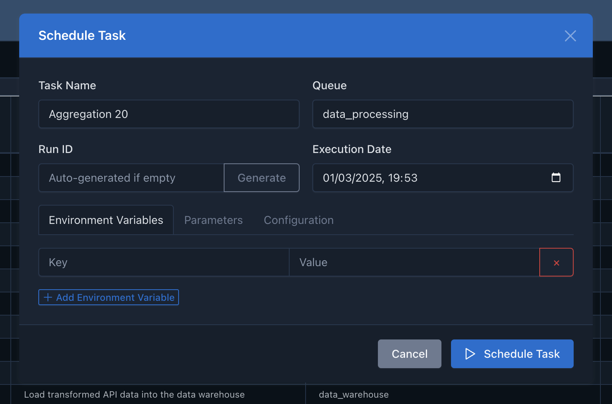

Scheduling Workflows
This guide covers the different ways to schedule and execute workflows in Cyclonetix.
Manual Scheduling
Command Line Interface
Cyclonetix provides a CLI for scheduling workflows:
Schedule by Outcome
To schedule a workflow by specifying the desired outcome (final task):
./cyclonetix schedule-task <task_id>Example:
./cyclonetix schedule-task deploy_modelThis will automatically resolve all dependencies of deploy_model and execute them in the correct order.
Schedule a DAG
To schedule a predefined DAG:
./cyclonetix schedule-dag <dag_id>Example:
./cyclonetix schedule-dag ml_training_pipelineSchedule with Context
You can provide a context when scheduling:
./cyclonetix schedule-dag ml_training_pipeline --context productionWeb UI
The Cyclonetix web UI provides a user-friendly way to schedule workflows:
- Navigate to the “Tasks” or “DAGs” page
- Find the task or DAG you want to schedule
- Click the “Schedule” button
- Configure any parameters or contexts
- Submit the form to start the execution

Automatic Scheduling
Time-Based Scheduling
Cyclonetix supports time-based scheduling similar to cron:
# In your DAG definition
schedule:
cron: "0 5 * * *" # Run daily at 5:00 AM
timezone: "UTC"
catchup: false # Don't run missed executionsCommon schedule patterns:
| Description | Cron Expression |
|---|---|
| Daily at midnight | 0 0 * * * |
| Every hour | 0 * * * * |
| Weekly on Monday | 0 0 * * 1 |
| Monthly on the 1st | 0 0 1 * * |
Event-Based Triggers
Cyclonetix can trigger workflows based on external events:
API Triggers
Trigger a workflow via the REST API:
curl -X POST http://your-cyclonetix-server:3000/api/schedule-task \
-H "Content-Type: application/json" \
-d '{"task_id": "process_data", "env_vars": {"SOURCE": "api_call"}}'File Arrival
Configure a workflow to start when files arrive in a monitored location:
triggers:
file_arrival:
path: "/data/incoming/"
pattern: "*.csv"
wait_seconds: 60Parameterized Execution
Passing Environment Variables
You can pass environment variables when scheduling a task or DAG:
./cyclonetix schedule-task generate_report \
--env DATA_DATE=2023-11-01 \
--env REPORT_TYPE=monthlyThese variables will be available to the task command.
Overriding Parameters
Override task parameters at scheduling time:
./cyclonetix schedule-dag etl_pipeline \
--param data_extraction.limit=5000 \
--param data_loading.mode=incrementalManaging Executions
Monitoring Execution
Once scheduled, you can monitor the execution:
- Navigate to the “Running DAGs” page in the UI
- Select the execution you want to monitor
- View the DAG visualization with real-time status updates
- Access task logs and details
Cancelling Execution
To cancel a running execution:
- Find the execution in the UI
- Click “Cancel” and confirm
- All running tasks will be terminated, and pending tasks will not be executed
Rerunning Failed Tasks
If a task fails, you can rerun it:
- Navigate to the execution details
- Find the failed task
- Click “Rerun” to attempt execution again
Clearing Execution History
To clear execution history:
./cyclonetix clear-history --days 30This removes execution records older than 30 days.
Advanced Scheduling
Backfilling
For time-based workflows, you can run executions for past time periods:
./cyclonetix backfill ml_training_pipeline \
--start-date 2023-01-01 \
--end-date 2023-01-31This will create one execution per day in the specified range.
Parallel Execution
Control the number of parallel task executions:
./cyclonetix schedule-dag large_workflow --max-parallel 5Dependency Overrides
Override normal dependency behavior for special cases:
./cyclonetix schedule-task final_step --ignore-dependenciesNext Steps
- Learn how to use the UI Overview to monitor executions
- Understand Contexts & Parameters for more control
- Explore Evaluation Points for dynamic workflows